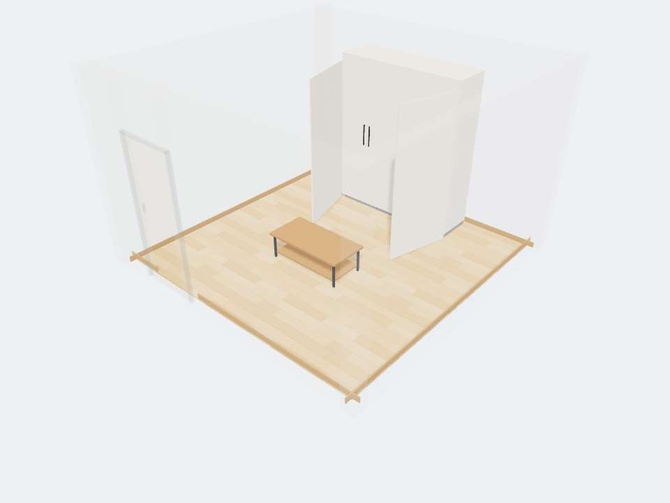
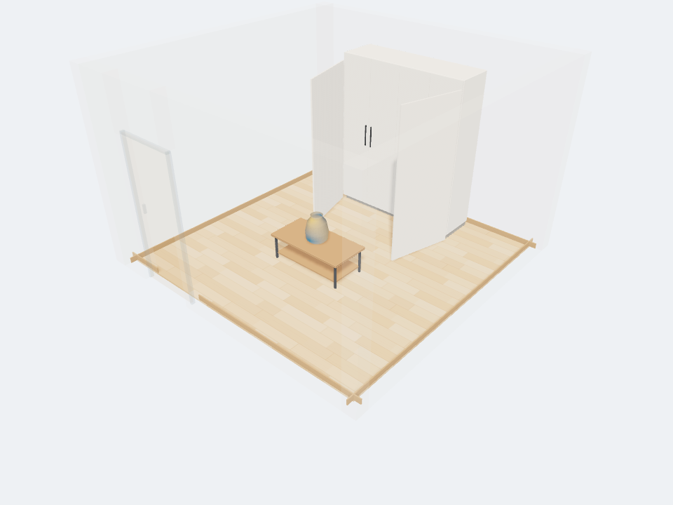
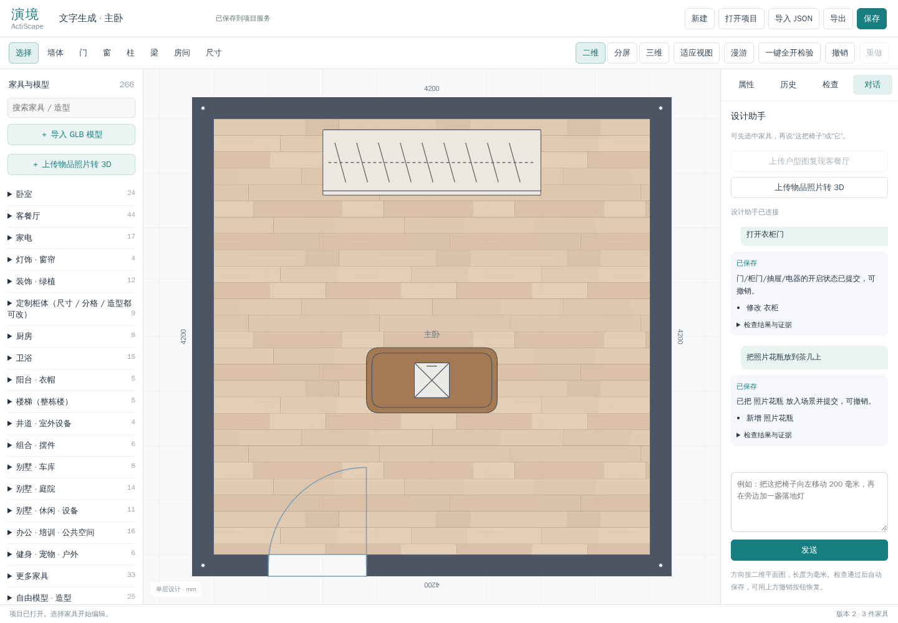
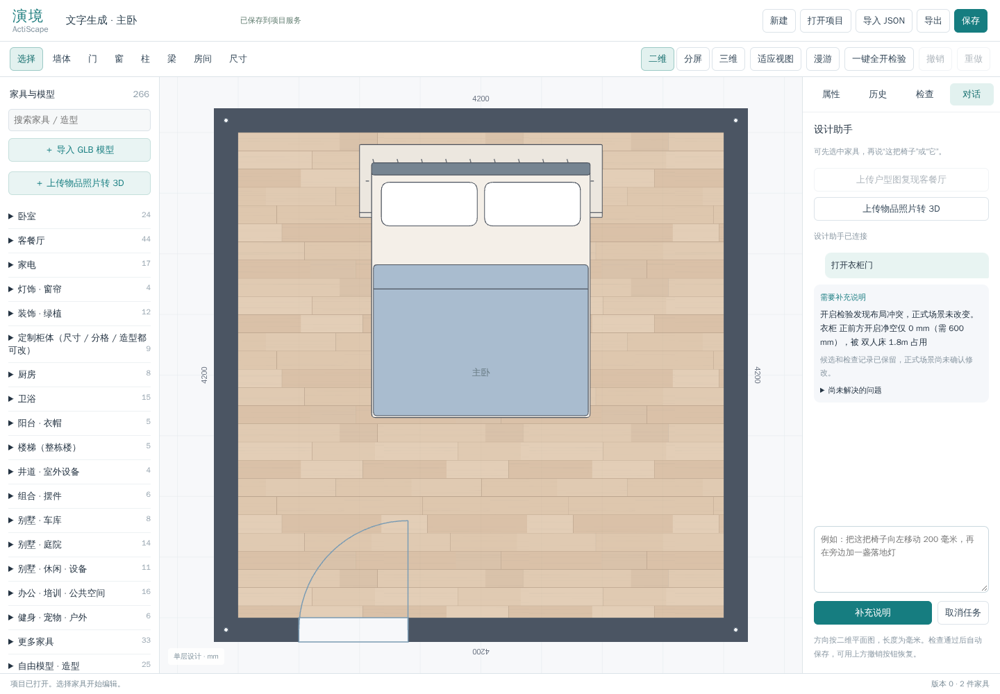

P3 SkillDispatcher + PolicyController 验收
双维 Skill 切片 · 四路径动态路由 · 动作/照片候选门禁 · 2026-11-10

① 动作路径：打开衣柜门PolicyController → interactive_action · Candidate action → CheckScene → Render → Review → Commit · revision 1

② 照片路径：花瓶放到茶几PolicyController → photo_to_scene · placeAsset Candidate · parentObjectId=茶几 · z=400 · revision 2

③ 对话侧闭环“打开衣柜门”“把照片花瓶放到茶几上”均自动保存；无需手工切换模式。
SkillDispatcher 阶段切片
intake 进场
universal-spatial-base适用边界 / 坐标与尺寸 / 提交门禁
asset 选品
universal-spatial-base坐标与尺寸 / 选品与体量 / 提交门禁master-bedroom怎么做style-coherence怎么做
layout 排布
universal-spatial-base坐标与尺寸 / 排布与净空 / 提交门禁master-bedroom怎么做style-coherence怎么做 · fallback
check 检查
universal-spatial-base坐标与尺寸 / 检查与报错码 / 提交门禁master-bedroom依赖什么 / 怎么验证style-coherence依赖什么 / 怎么验证
repair 修复
universal-spatial-base坐标与尺寸 / 修复顺序 / 提交门禁master-bedroom怎么做 / 依赖什么 / 怎么验证style-coherence怎么做 / 依赖什么 / 怎么验证 · fallback
同一份 bundle：universal + master-bedroom + style-coherence；每个 Agent 只拿本阶段章节，未命中时显式 fallback。

④ 动作包络拦截床正对衣柜：等待补充说明，OPENABLE_FRONT_BLOCKED，正式项目 revision 0 不变。
Policy 四路径
interactive_action 开门/开柜/拉抽屉/开关灯
photo_to_scene 单张照片资产 → 台面/地面
generate_rectangular 文字生成全屋单房间
reconstruct_floorplan 户型图全屋复现
edit 复杂局部编辑的兜底路由
歧义直接 waiting_input；显式 mode 永远优先；所有写路径仍走 Candidate → CheckScene → Commit。